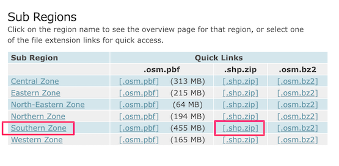
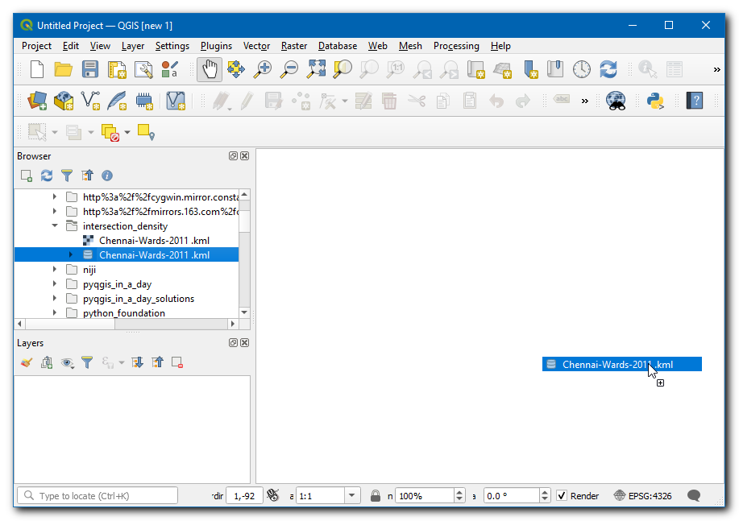
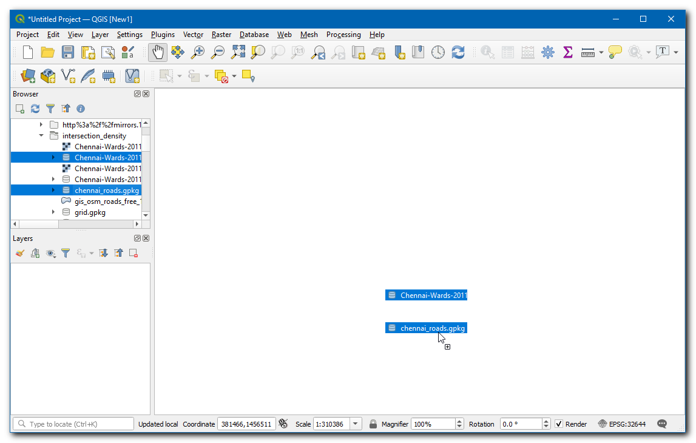
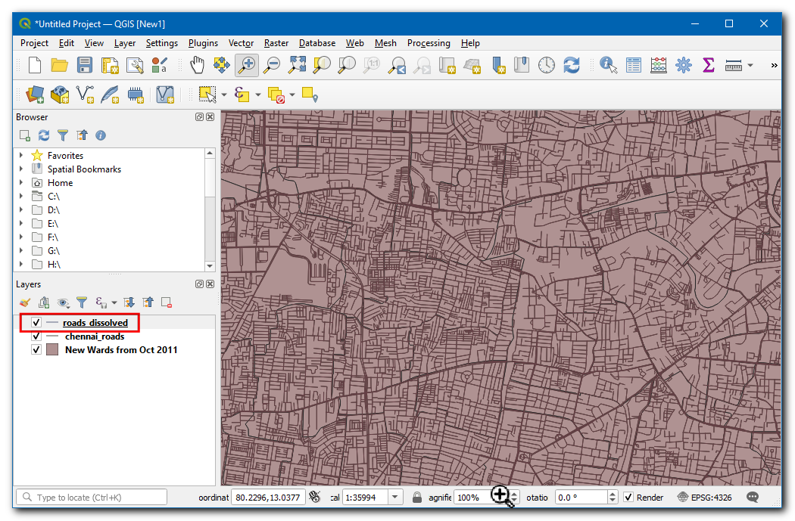
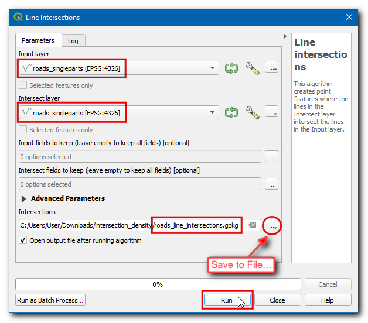
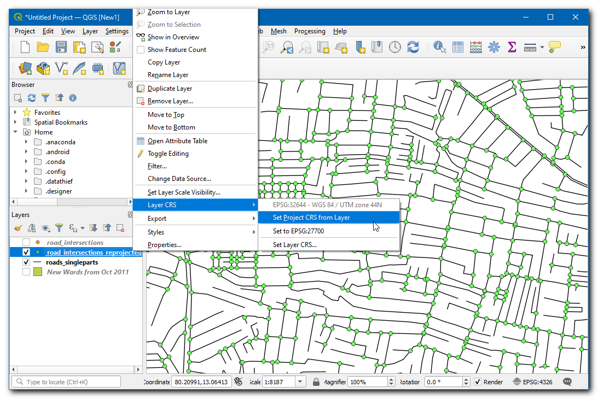
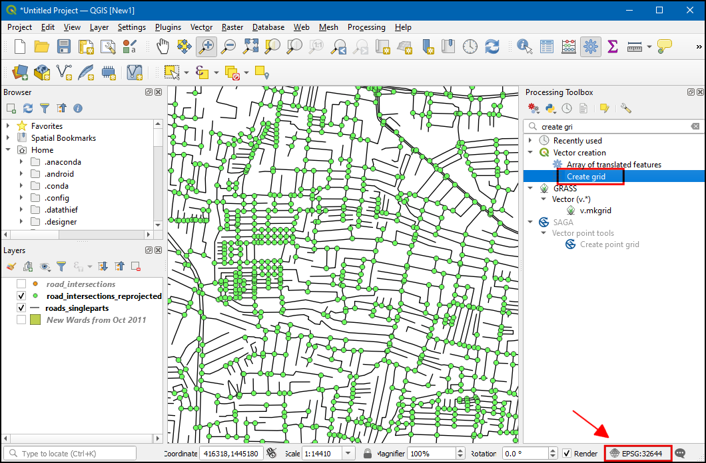
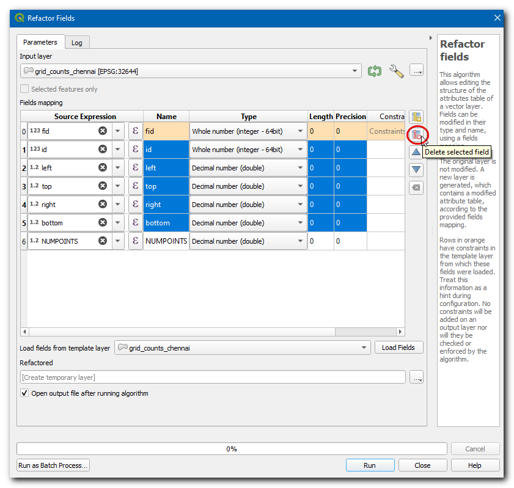

Ujaval Gandhi
Ujaval GandhiIzračunavanje gustine raskrsnica ulica (QGIS3)¶
Gustina raskrsnica ulica je korisna mera povezanosti mreže. Moguće je izdvojiti i agregirati raskrsnice ulica preko pravilne mreže da bi se izračunala gustina. Ova analiza se često koristi u projektovanju transporta, kao i u urbanom planiranju, kako bi se utvrdila pešačka dostupnost naselja. Zahvaljujući dostupnosti globalnog skupa podataka o uličnoj mreži iz OpenStreetMap-a i QGIS-a, možemo lako izračunati i vizualizovati gustinu raskrsnica za bilo koji region sveta.
Pregled zadataka¶
U ovom tutorijalu, uzećemo podatke putne mreže OpenStreetMap i izračunati gustinu raskrsnica ulica za grad Čenaj u Indiji.
Druge veštine koje ćete naučiti¶
Kako preuzeti podatke OpenStreetMap-a kao shapefile-ove i iseći ih na područje koje vas zanima.
Kako kreirati mreže u QGIS-u.
Dobijte podatke¶
Koristićemo podatke sa sajta opencities da bismo dobili granice grada za Čenaj, a zatim podatke o putnoj mreži sa sajta OpenStreetMap Data Extracts za Indiju.
Preuzmite gradske granice¶
Posetite veb-sajt opencity, a zatim potražite „mapa naselja Čenaja“.
Kliknite na prvi link i preuzmite podatke u KML formatu. Sloj „Chennai-wards-2011.kml“ će biti preuzet.

Preuzmite putnu mrežu¶
Posetite server OpenStreetMap Data Extracts download kompanije GEOFABRIK. Za ovaj tutorijal, potrebni su nam podaci za grad Čenaj u Indiji. Kliknite na Asia.
Sada u podregioni, izaberite Indija.

Tražimo datoteku „.shp.zip“ za :guilabel:„Južna zona“. Kliknite na link da biste je preuzeli.

Ovo je velika datoteka za preuzimanje koja sadrži izvod podataka za celu zemlju. Raspakujte datoteku „southern-zone-latest-free.shp.zip“. Dobićete mnogo slojeva shapefile-a.

Pričvrstite putnu mrežu za granicu grada¶
Sada ćemo iseći sloj puteva na nivou države na područje koje nas zanima. Otvorite QGIS i prevucite i ispustite datoteku „Chennai-wards-2011.kml“.

Umesto otvaranja velikog sloja u QGIS-u, možemo ga direktno pročitati sa diska i iseći ga. Otvorite Processing Toolbox i pronađite algoritam . Dvaput kliknite da biste ga otvorili.

U Ulazni sloj izaberite
…i kliknite na Pretraži sloj…

Idite do direktorijuma gde ste preuzeli podatke OpenStreetMap-a i izaberite
gis_osm_roads_free_1.shp. U sloju Overlay layer izaberiteNew Wards from Oct 2011. Zatim kliknite na…u Clipped i izaberite Save to File…, pregledajte fasciklu u kojoj želite da sačuvate rezultate, unesite ime kaochennai_roads.gpkgi kliknite na Run.

Kada se obrada završi, novi sloj „chennai_roads“ će biti učitan na platnu.

Radi lakšeg snalaženja, možete direktno preuzeti kopiju isečenog skupa podataka sa linka ispod:
Izvor podataka: [OPENCITIES] [GEOFABRIK]
Procedura¶
Sada će biti dostupna oba sloja korišćena za proračun. Ako ste preuzeli podatke, pronađite datoteke
Chennai-Wards-2011.kmlichennai_roads.gpkgu Pregledaču, a zatim ih prevucite i ispustite na platno.

Prvi zadatak je izdvajanje raskrsnica puteva. To se može uraditi pomoću ugrađenog alata za preseke linija. Hajde da ovo prvo testiramo na malom podskupu da vidimo da li su rezultati zadovoljavajući. Izaberite sloj puteva i koristite alatku Izaberi objekte po oblasti da biste nacrtali pravougaonik i izabrali nekoliko puteva.

Otvorite Kutiju sa alatkama za obradu i pronađite algoritam . Dvaput kliknite da biste ga otvorili.

Izaberite
chennai_roadskao Ulazni sloj i Sloj preseka. Obavezno označite Samo odabrane karakteristike. Kliknite na Pokreni.

Biće dodat novi sloj „Raskrsnine“. Primetićete da, iako je većina tačaka preseka tačna, postoje i neki lažno pozitivni rezultati. To je zato što algoritam smatra preseke svakog segmenta linije kao validnu raskrsnicu. Ali za našu analizu, potrebno je da izdvojimo samo raskrsnice kada se seku 2 ili više ulica.

Uklonite sloj Raskrsnice i kliknite na dugme Poništi izbor objekata iz svih slojeva da biste uklonili izbor. Sada ćemo spojiti sve susedne segmente puta, tako da se segmenti između raskrsnica spoje u jedan objekat. Otvorite kutiju sa alatkama za obradu i pronađite algoritam . Dvaput kliknite da biste ga otvorili.

Izaberite
chennai_roadskao Ulazni sloj. Unesite naziv Rastvorenog izlaznog sloja kaoroads_dissolved.gpkg. Kliknite na Pokreni.

Dobijeni sloj „roads_dissolved“ ima sve segmente puta spojene u jedan objekat.

Zatim, otvorite alatku za obradu i pronađite . Dvaput kliknite da biste ga otvorili. Izaberite sloj
roads_dissolvedkao Ulazni sloj. Unesiteroads_singleparts.gpkgkao izlazni sloj Pojedinačni delovi. Kliknite Pokreni.

Dobijeni sloj
roads_singlepartsće imati spojene sve susedne segmente, ukloniće slojeveroads_dissolvedichennai_roads. Sada otvorite kutiju sa alatkama za obradu i pronađite algoritam . Dvaput kliknite da biste ga pokrenuli.

Izaberite
roads_singlepartskao i Ulazni sloj i Sloj preseka. Nazovite izlazni sloj Intersections kaoroads_line_intersections.gpkg. Kliknite na Pokreni.

Белешка
Ovo je računarski zahtevna operacija i može potrajati dugo u zavisnosti od kapaciteta vašeg računara.
Dobijeni sloj
roads_line_intersectionssada ima sve raskrsnice ispravno identifikovane. Ali i dalje nije savršen. Koristite alatku Izaberi obeležja po površini i izaberite bilo koju raskrsnicu. Videćete da na svakoj raskrsnici postoji nekoliko duplih tačaka iz susednih segmenata. Ako koristimo ovaj sloj za dalju analizu, to će rezultirati uvećanim brojem raskrsnica. Hajde da uklonimo duplikate, otvorimo kutiju sa alatkama za obradu i pronađemo algoritam . Izaberiteroads_line_intersectionskao Ulazni sloj i unesiteroad_intersections.gpkgkao Očišćen izlazni sloj. Kliknite na Pokreni.

Novi sloj „raskrsnice puteva“ ima tačan broj raskrsnica puteva izvučenih iz izvornog sloja. Kliknite desnim tasterom miša na stari sloj „raskrsnice linija puteva“ i izaberite Ukloni sloj da biste ga uklonili.

Sada ćemo izračunati gustinu tačaka preklapanjem pravilne mreže i brojanjem tačaka u svakom poligonu mreže. Moramo ponovo projektovati podatke na projektovani CRS kako bismo mogli da koristimo linearne jedinice merenja. Možemo koristiti odgovarajući CRS na osnovu UTM zone u kojoj se grad nalazi. Možete videti mapu UTM Grid Zones of the World da biste locirali UTM zonu za vaš grad. Čenaj spada u UTM zonu 44N. Otvorite Processing Toolbox i pronađite algoritam . Dvaput kliknite da biste ga otvorili.

Izaberite
road_intersectionskao Ulazni sloj. Pretražite klikom na ikonu globe pored Target CRS i izaberiteEPSG:32644 - WGS 84 / UTM zona 44N. Ovo je CRS zasnovan na WGS84 datumu za UTM zonu 44N. Unesite Reprojected izlazni sloj kaoroad_intersections_reprojected.gpkg. Kliknite na Pokreni.
Kada se obrada završi i sloj
road_intersections_reprojectedbude dodat, kliknite desnim tasterom miša i izaberite Layer . I uklonite slojroad_intersections.

Projekat CRS će biti ažuriran u donjem desnom uglu prozora. Svrha ovog koraka je da se osigura da su svi slojevi prikazani u CRS-u novog sloja. Sada smo spremni da kreiramo mrežu koristeći
road_intersections_reprojectedkao referencu. Otvorite Processing Toolbox i pronađite algoritam . Dvaput kliknite da biste otvorili.

Izaberite tip Grid kao Rectangle (Polygon). Kliknite na dugme
...u Grid extent i izaberite .

Izaberite Project CRS kao Grid CRS. Želimo da kreiramo mrežu od 1 km x 1 km, pa podesite i Horizontal spacing i Vertical spacing na
1000metara. Sačuvajte izlazni sloj Grid kaogrid.gpkg. Kliknite na Run.

Biće kreiran sloj „mreža“ koji sadrži pravougaone poligone mreže. Sada možemo da izbrojimo broj tačaka u svakom poligonu, ali pošto su naši slojevi veliki, ovaj proces može dugo trajati. Jedan od načina da se ubrzaju prostorne operacije je korišćenje Prostornog indeksa. Otvorite Kutiju sa alatkama za obradu i pronađite algoritam . Dvaput kliknite da biste ga otvorili.

Izaberite sloj „grid“ i kliknite na Run, sada će sloj imati prostorni indeks koji može poboljšati performanse izračunavanja sa ovim slojem.

Otvorite okvir sa alatkama za obradu i pronađite algoritam .

Izaberite
gridkao Poligonski sloj iroad_intersections_reprojectedkao Sloj tačaka. Sačuvajte izlazni sloj Count kaogrid_count.gpkg. Kliknite na Pokreni.

Dobijeni sloj
grid_countće imati atribut NUMPOINTS koji sadrži broj tačaka preseka unutar svake mreže. Postoji mnogo mreža sa 0 tačaka. To će pomoći našoj analizi i vizuelizaciji da uklonimo poligone mreže koji ne sadrže preseke. Otvorite kutiju sa alatkama za obradu i pronađite algoritam .

Izaberite
grid_countkao Ulazni sloj, zatim izaberiteNUMPOINTSu Atribut selekcije,>u Operator i unesite0kao Vrednost. Sačuvajte Izdvojeno (atribut) izlazni sloj kaogrid_counts_chennai.gpkg. Kliknite na Pokreni.

Dobijeni sloj „grid_counts_chennai“ će imati mrežne poligone iznad grada Čenaj i sadržaće broj raskrsnica puteva kao atribut za svaki poligon. Uklonite sve slojeve osim „grid_counts_chennai“.

Hajde da očistimo tabelu atributa našeg sloja podataka. Preferirani metod za izmene tabele atributa je korišćenje algoritma za obradu pod nazivom „Refactor Fields“ - Polja za refaktorisanje. Otvorite „Processing Toolbox“ - Kutiju sa alatkama za obradu i pronađite algoritam - Vektorska tabela –> Polja za refaktorisanje. Dvaput kliknite da biste ga otvorili. Kliknite na bilo koji red u odeljku Field Mapping - Mapiranje polja da biste ga izabrali. Možete držati pritisnut taster Shift da biste izabrali više redova, izaberite sva polja osim fid i NUMPOINTS. Kliknite na dugme Izbriši izabrana polja.

Preimenujte polje NUMPOINTS kao
intersection_densityi sačuvajte sloj kaoroad_intersection_density.gpkg, kliknite na Pokreni.
Hajde da stilizujemo ovaj sloj da bismo videli gustinu svake mreže, izaberite sloj
road_intersection_densityi kliknite na Otvori panel za stilizovanje slojeva. Izaberite Graduated renderer, i u Values izaberite Intersection Density, Color ramp po vašem izboru, postavite classes na7i kliknite na Classify.

U vrednosti unesite „0-50“, „50-100“, „100-150“ i tako dalje do „300 - 350“. Sada ste kreirali mapu koja prikazuje gustinu raskrsnica širom grada.

If you want to give feedback or share your experience with this tutorial, please comment below. (requires GitHub account)